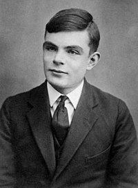

A evolução dos computadores acompanhou a evolução da sociedade durante os séculos XX e XXI.
Entretanto, a história do computador não teve início apenas na modernidade.
Lembre-se que os computadores são aparelhos eletrônicos que recebem, armazenam e produzem informações de maneira automática.
Eles fazem parte do nosso cotidiano, sendo cada vez maior o número de computadores usados no mundo.
E com isso, os computadores também passaram por fases de evoluções, que chamamos de gerações. Confira algumas delas que estam presentes
aqui:

Alan Turing foi um matemático e criptógrafo inglês e atualmente é considerado o pai da ciência da computação, uma vez que, por meio de suas ideias, foi possível desenvolver o que chamamos hoje de computador e por seus feitos durante a 2ª Guerra Mundial,
onde os países temiam batalhar com a Alemanha, por causa de sua máquina eletromecânica de criptografia o “ENIGMA”, a máquina conseguia codificar e decodificar mensagens secretas durante a 2° Guerra Mundial, dando uma grande vantagem para Alemanha, pois ninguém conseguia decifrar as mensagens codificadas dos Alemães.
Com medo de perder a guerra por causa dessa grande desvantagem, em 1939 o exército Britânico (que era uma das principais forças das nações aliadas) convoca secretamente uma equipe, que tinha o objetivo de quebrar os indecifráveis códigos Alemães e Turing era uns dos membros dessa equipe.
Por causa de seu trabalho, foi desenvolvida uma máquina conhecida como "The Bombe" (bomba eletromecânica), que decifrou o código da máquina ENIGMA, por causa disso, os aliados tiveram acesso a informações privilegiadas ao longo da guerra,encurtando a guerra em 2 anos.
Sua história tornou-se um filme chamado "O Jogo da Imitação", de 2015... Confira o trailer: